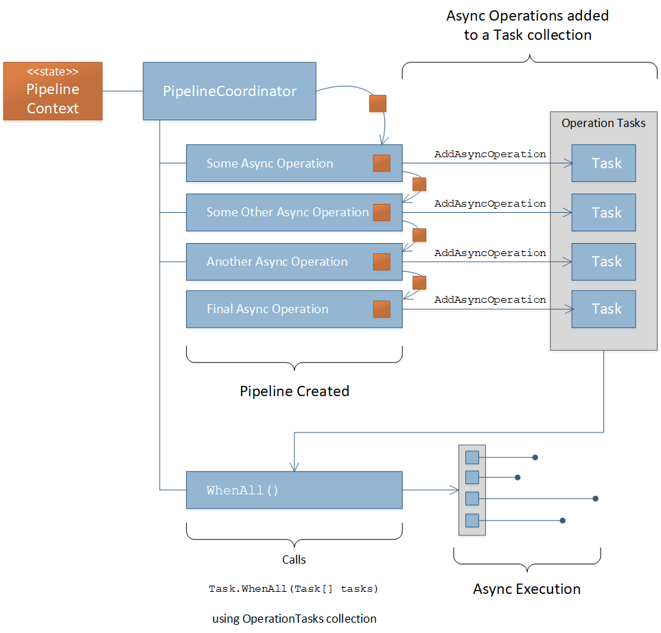

How It Works¶
The core of the Pipelines framework is a model that combines the Builder Pattern and the Chain of Responsibility Pattern . However, they are not implemented exactly as those patterns prescribe but are instead derived from them.
The Builder Pattern is a Creational Pattern whereas the Chain of Responsibility Pattern is a Behavioral Pattern. The Pipelines framework provides the ability to build a pipeline (Builder) through the manual execution of each operation in the pipeline (Chain of Responsibility). Therefore, the Pipeline Coordinator serves as both the Director of the Builder Pattern and the head of the Chain of Responsibility.
In this implementation, the Pipeline Coordinator does the job of executing each successor and passing the state object to each Concrete Handler in the Chain. In the original Chain of Responsibility Pattern, each handler would have to call its successor and pass the state object down. In the Pipelines framework the individual Operations (i.e. Handlers) don’t have to worry about calling the next operation in the chain (i.e. successor) nor do they have to worry about passing the state object down. This is all handled by the Pipeline Coordinator implemented as part of the framework.
The diagram below depicts the flow of the Pipelines framework model.

The diagram above depicts the code below.
1 2 3 4 5 6 7 8 9 10 11 | // The state object is in the _pipelineCoordinator.Context property
_pipelineCoordinator
.Execute<ISomeOperation>()
.Execute<ISomeOtherOperation>()
.Execute<IAnotherOperation>()
.Execute<IFinalOperation>()
;
// Do something with the results in the state object
return _pipelineCoordinator.Context.Stuff;
|
You can also execute asynchronous operations in the following ways.
ExecuteAsync<TOperation> This executes the async operation and awaits it before moving to the next operation
AddAsyncOperation<TOperation> with WhenAll() Each call to the
AddAsyncOperationmethod adds the Operation’s Task to theOperationTaskscollection. Therein the collection accumulates the number of Tasks added. After all the desired async Operation tasks have been added to the collection, a call to theWhenAll()method will await all of those tasks and return to the pipeline when all the tasks have run to completion or faulted. Once the task collection has been awaited, then the Pipeline Coordinator clears theOperationTaskscollection so that new asynchronous tasks can be added if so desired.
Warning
If there are any pending Tasks in the OperationTasks collection, then you cannot call ExecuteAsync<TOperation> until those
pending tasks have been awaited and the OperationTasks collection is cleared. Attempting to do that will throw an exception.
The diagram below depicts the flow of asynchronous execution in the Pipelines framework.
The diagram above depicts the code below.
1 2 3 4 5 6 7 8 9 10 11 12 13 14 15 16 17 | // The state object is in the _pipelineCoordinator.Context property
_pipelineCoordinator
// Add the operation tasks to the OperationTasks collection
.AddAsyncOperation<ISomeOperationAsync>()
.AddAsyncOperation<ISomeOtherOperationAsync>()
.AddAsyncOperation<IAnotherOperationAsync>()
.AddAsyncOperation<IFinalOperationAsync>()
// Execute pending tasks asynchronously
.WhenAll()
;
// Do something with the results in the state object
return _pipelineCoordinator.Context.Stuff;
|
With this framework you can mis synchronous Operation with asynchronous Operations if some things are dependent on others but parts of the application logic can be combined asynchronously.
1 2 3 4 5 6 7 8 9 10 11 12 13 14 15 16 17 18 19 20 21 22 23 | // The state object is in the _pipelineCoordinator.Context property
_pipelineCoordinator
// These operations executed one at a time in order
.Execute<IPreliminaryOperation>()
.ExecuteAsync<ISomeFetchOperationAsync>()
// These tasks can be executed asynchronously
.AddAsyncOperation<ISomeOperationAsync>()
.AddAsyncOperation<ISomeOtherOperationAsync>()
.AddAsyncOperation<IAnotherOperationAsync>()
.AddAsyncOperation<IFinalOperationAsync>()
.WhenAll()
// Continue with other synchronous operations
.Execute<ICalculationOperation>()
.ExecuteAsync<ISomeSaveOperationAsync>()
;
// Do something with the results in the state object
return _pipelineCoordinator.Context.Stuff;
|
You can see from the code above that if there is an opportunity to optimize performance of the process by identifying and combining
asynchronous operations you can do so using the AddAsyncOperation<TOperation> with WhenAll() combination before, after, or
in between synchronous operations.